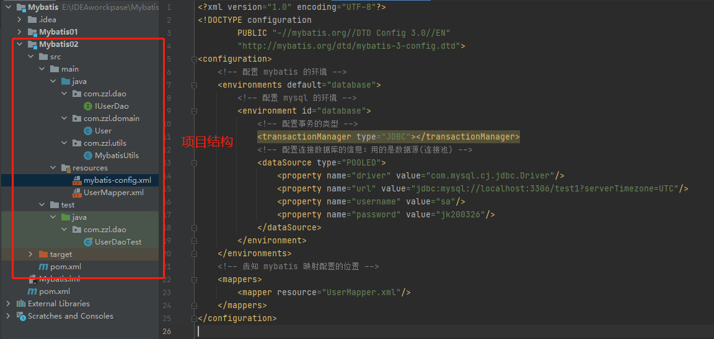

Mybatis01
1、导入Maven依赖
1 | <!--导入Mybatis依赖--> |
- 导入mysql驱动时先查看mysql版本
1 | mysql -V |
xxxxxxxxxx st=>start: 开始框 op=>operation: 处理框 cond=>condition: 判断框(是或否?) sub1=>subroutine: 子流程 io=>inputoutput: 输入输出框 e=>end: 结束框 st->op->cond cond(yes)->io->e cond(no)->sub1(right)->op flow Created with Raphaël 2.2.0开始框处理框判断框(是或否?)输入输出框子流程ERROR: [Flowchart] h.shiftX is not a function
项目结构

- 2.1、mybatis核心配置文件==mybatis-config.xml==
1 |
- mysql8与Mysql5的连接不一样
- mysql8
- com.mysql.cj.jdbc.Driver
- mysq5
- com.mysql.jdbc.Driver
- mysql8
- 2.2、映射文件==UserMapper.xml==
1 |
|
3、编写
- 实体类：与数据库表字段一致
1 | private int useid; |
- Dao接口
1 | public interface IUserDao { |
4、异常
mybatis下opening session空指针异常
1 |
核心配置文件的defalt和id要一致

修改